这次不把 AI 当成一个新工具来讲，而是回到一个更底层的问题： 我们如何组织信息，才能让沟通、协作和判断更稳定？
关键不是“怎么问 AI”，而是“怎么描述世界”。人和 AI 都不直接处理现实本身，而是处理现实被语言、表格、截图、会议纪要、需求文档压缩后的版本。
一件事从现实走向行动，会经过一条信息链路。只要其中任何一段含糊，后面的动作就会开始漂移；AI 加进来以后，这个漂移会被更快地放大。
信息损耗通常不是“没有说”，而是“说了但没被正确还原”。工作里的返工、误会、低效，很多都发生在这些微小断点上。
我以为你知道背景，所以没有说清楚目标、限制、优先级。
“尽快”“优化一下”“高级一点”听起来明确，执行时却有很多版本。
无关信息太多，真正影响判断的变量被淹没。
上下文已经变化，但文档、口径和下一步动作没有同步更新。
当语言不再传递信息，而是在争夺控制权，沟通就会变形。有些表达表面是在沟通，实际是在偷换问题：不讨论事实、理由和选择，而是把话题推向身份、亏欠、道德和服从。
“你现在翅膀硬了是吧？”
把“不同意见”偷换成“背叛 / 不服管”。
“我生了你，你就得听我的。”
把“生育事实”偷换成“永久控制权”。
“我都是为你好。”
用“出发点正确”掩盖方法是否合理。
“你怎么这么不懂事？”
把具体分歧升级成人格否定。
这些话的问题，不只是“不好听”，而是破坏了信息逻辑。
健康沟通不是压掉情绪，而是把情绪翻译成可讨论、可确认、可协商的信息。
这一页可以连接回 AI：输入信息如果被偷换、污染或压制，输出和行动也会跟着偏。
大语言模型的“推理”，可以先理解成上下文塑形后的概率选择。它不是在读懂你的全部现实，而是在你提供的上下文里，持续预测接下来最合理的表达、步骤和结构。
示意图只表达机制：上下文改变，概率分布就会改变。
提示词的本质，是把问题变成结构。真正有复用价值的不是某一句“神奇提示词”，而是背后的信息槽。
同一个任务，信息密度不同，输出质量会完全不同。
帮我写一个双周分享会通知。
文字通常不会太差，但它会偏通用：不知道公司机制、不知道本期主题亮点，也不一定会顺手征集下一期分享人。
讲述建议：现场可以真的打开一个 AI 工具，先输入弱提示，再输入结构化提示。让大家看到变化，比解释概念更有说服力。
AI 最适合放在“信息半成品”的加工环节。从零让 AI 替你决定方向，风险很高；把原始材料、判断标准和边界交给 AI，让它整理、改写、对比、挑错，收益更稳定。
纪要 → 结论、行动项、负责人、截止时间、待确认问题。
先让 AI 追问目标、受众、语气、结构，再开始写。
让 AI 从挑错者视角检查遗漏、歧义、风险和下一步。
把一次经验变成模板、检查清单、下次可复用的提示词结构。
双周分享会不是“每两周找个人讲一次”，而是通过通知、征集、候选池、现场演示和归档，减少知识流动中的断点。
提前把时间、地点、主题、主讲人和内容方向说清楚。
本期通知发出时，同步启动下一期报名。
把临时意愿变成稳定排期，避免内容断档。
用真实案例和现场操作，让经验更容易复制。
把一次分享变成团队长期可检索的知识资产。
新的分工是：人负责定义现实，AI 负责扩展候选。AI 的价值，是让我们更快看到更多表达、方案和风险，然后由人做最后取舍。
为什么要做，做到什么程度算完成。
哪些信息可靠，哪些结论不能直接用。
摘要、归类、改写、格式化、转换视角。
从用户、老板、同事、风险视角模拟追问。
清楚的问题会得到可用的候选；混乱的问题只会得到顺滑的混乱。